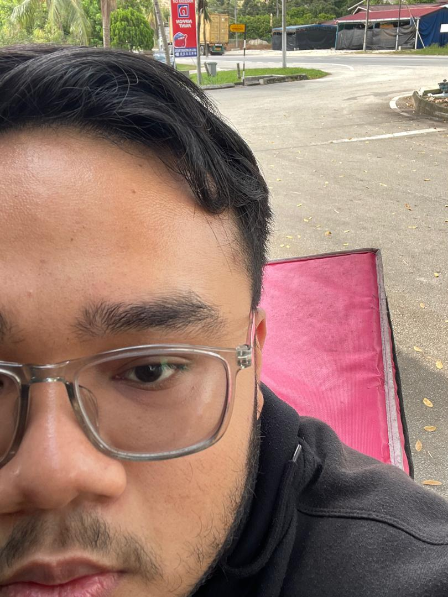

About Me
I'm Syamil Irsyad bin Abdul Razak. Welcome to my biodata page, where I share insights about my life, my education, and my work experiences.
I've been striving to create this and hope you enjoy exploring it!
I'm Syamil Irsyad bin Abdul Razak. Welcome to my biodata page, where I share insights about my life, my education, and my work experiences.
I've been striving to create this and hope you enjoy exploring it!